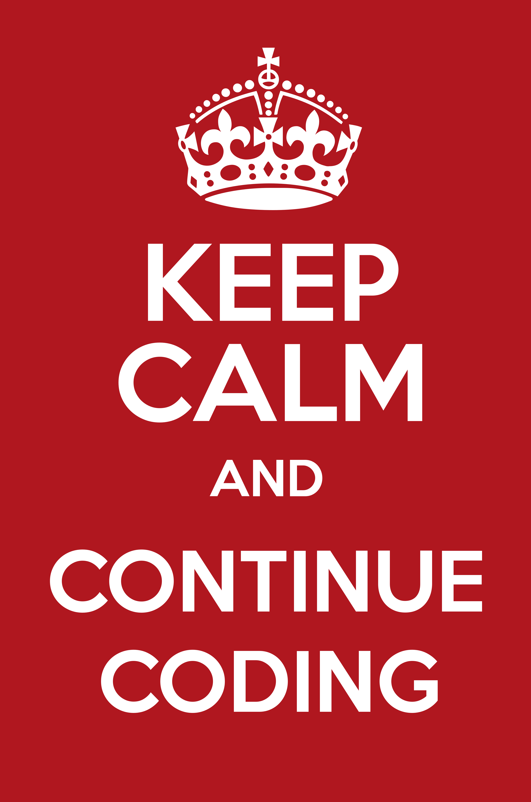

class: center, middle .title-header[Civiform] .title[Coding e Robotica] .subtitle[per l’innovazione sociale] .title-footer[Cividale, gennaio-febbraio 2022] --- # Ciclo di sviluppo del software .process[ .center[ problema → soluzione → .coding[algoritmo → programma]]] .stages[ 1. .stage[analisi] 2. .stage[progettazione] 3. .stage[.coding[coding]] 4. .stage[collaudo] ] --- # Algoritmo Strategia di risoluzione di un .keyword[problema]: * finito * deterministico * non ambiguo * generale Deriva dal nome del matematico persiano **al-Khwarizmi**. --- # Pensiero computazionale * **analisi** → esercitare il pensiero * **progettazione** → formalizzare il pensiero * **codifica** → automatizzare il pensiero * **collaudo** → validare del pensiero .important[ Il riscontro oggettivo e immediato della bontà della soluzione corrente permette di instaurare un ciclo virtuoso che accelera il raggiungimento della soluzione cercata] --- class: center, middle .title[Scratch] --- # Narrazione * predisposizione degli sfondi * cambio sfondo temporizzato * immagini bitmap e vettoriali * posizionamento statico di sprite * dialogo sincronizzato tra sprite --- # Estensione Penna * variabili * cicli nidificati * cicli condizionati * blocchi personalizzati --- # Videogioco * tecniche di movimento degli sprite * animazione degli sprite * gestione delle collisioni * comunicazione per mezzo di messaggi * conto alla rovescia --- # Tecniche avanzate * cloni * struttura di dati .keyword[lista]: * manipolazione * scansione lineare * liste associate --- class: center, middle .title[mBot2] --- # Sensori * sensibilità * accuratezza * precisione La .keyword[calibrazione] può migliorare l’affidabilità dei dati. --- # Attuatori * giochi meccanici * tolleranze degli organi di movimento * interferenze ambientali Necessità di algoritmi robusti! --- # Retroazione 1. acquisizione dei dati dai sensori 2. selezione dell’azione più adeguata 3. esecuzione della manovra scelta 4. tornare al punto 1. --- class: center, middle .title[Conclusioni] --- # Considerazioni * non pretendere di scrivere il programma perfetto * risolvere il problema generale procedendo per passi * sfruttare gli errori per capire dove intervenire * commentare le parti più complesse del codice --- # Errori più comuni * blocchi fuori posizione * valori dei parametri errati * modifica della variabile sbagliata * condizioni non corrette --- class: center, middle .center[]